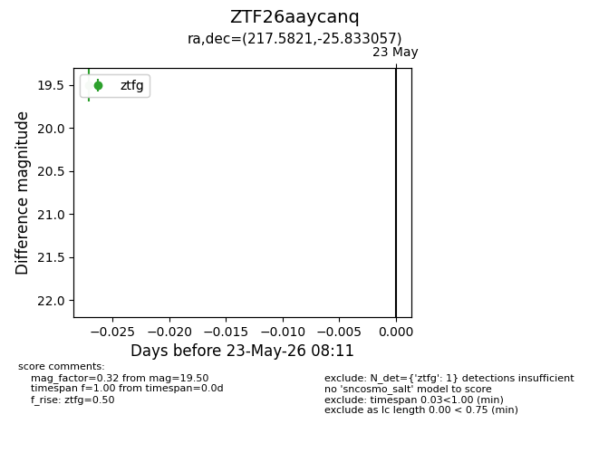
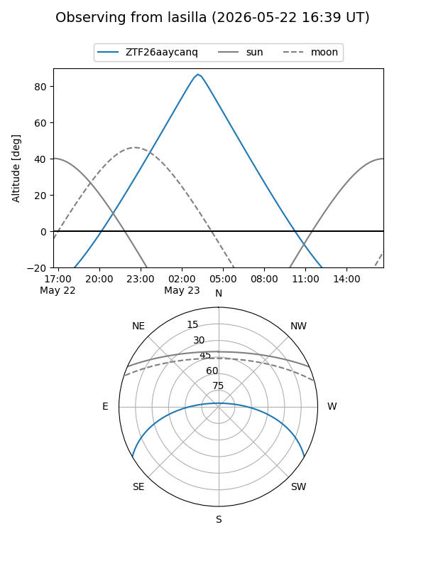
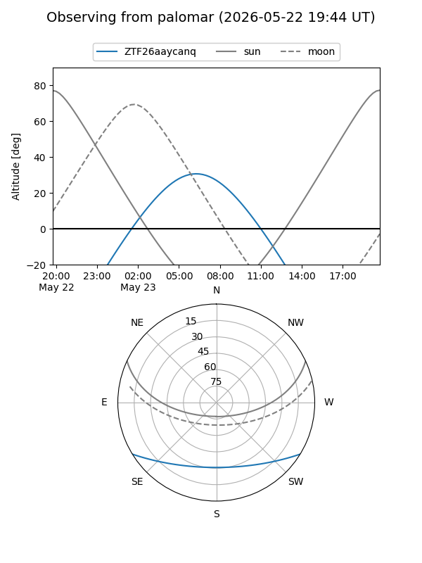

ZTF26aaycanq
Target ZTF26aaycanq at 2026-05-23 08:12
Aliases and brokers:
lsst-FINK: link
lsst-Lasair: link
lsst-ALeRCE: link
ztf-FINK: link
ztf-Lasair: link
ztf-ALeRCE: link
alt names
ZTF26aaycanq (ztf,fink_ztf)
Coordinates:
equatorial (ra, dec) = 217.5821,-25.83306
equatorial (HMS+DMS) = 14:30:19.71,-25:49:59.00
galactic (l, b) = (329.2631,+31.93334)
Flags:
Photometry:
last ztfg=19.50
1 ztfg detections
Lightcurve

Visibility


Additional plots